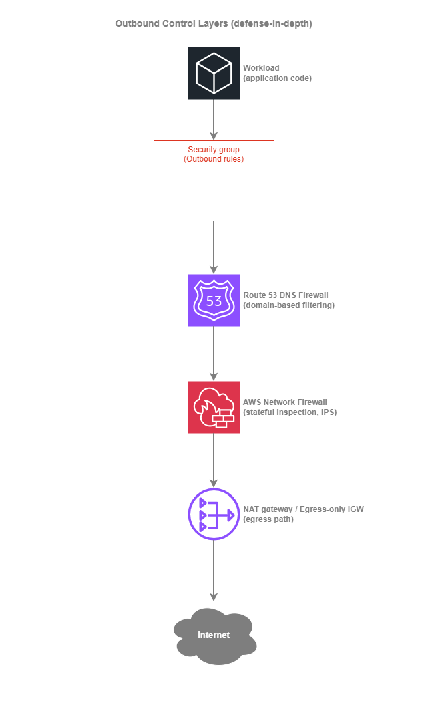

아웃바운드 제어¶
사전 요구 사항
이 섹션은 Amazon VPC, 서브넷, 인터넷 연결, 경계 제어에 대한 이해를 전제로 합니다. AWS 네트워킹 기초가 처음이라면 해당 항목을 먼저 검토하세요.
아웃바운드 제어는 워크로드가 인터넷에서 접근할 수 있는 대상과 트래픽이 환경을 떠나기 전에 어떻게 필터링되는지를 결정합니다. 인터넷 연결 페이지에서는 이그레스(egress)가 어디서 발생하는지에 대한 아키텍처 선택(중앙 집중식 vs. 분산형, IPv4 vs. IPv6)을 다룹니다. 이 페이지는 보안 관점에 집중합니다. 즉, 무엇이 허용되는지, 어떻게 이를 적용하는지, 그리고 이그레스에 대한 심층 방어(Defense in Depth)가 인그레스만큼 중요한 이유를 설명합니다.
핵심 원칙은 단순합니다. 아웃바운드는 기본 차단, 예외적으로만 허용합니다. 대부분의 프로덕션 워크로드는 소수의 잘 정의된 외부 대상, 즉 특정 AWS 서비스 엔드포인트, 일부 서드파티 API, OS 패키지 저장소에만 접근하면 됩니다. 그 외 모든 것은 불필요한 공격 표면입니다. 제한 없는 이그레스 경로는 데이터 유출, 명령 및 제어(C2) 콜백, 공급망 침해를 가능하게 하는 가장 흔한 원인입니다. 아웃바운드 제어는 이러한 경로를 차단하기 위해 존재합니다.
AWS는 이그레스 필터링을 위한 여러 계층을 제공하며, 각 계층은 스택의 서로 다른 수준에서 동작합니다. 올바른 접근 방식은 하나를 선택하는 것이 아니라, 한 제어에서 발생한 허점을 다음 계층이 잡아낼 수 있도록 계층을 쌓는 것입니다.

아웃바운드 제어 계층 — Drawio 소스
각 계층은 고유한 기능을 추가합니다. 보안 그룹은 인스턴스 수준에서 포트 및 프로토콜 제한을 적용하고, DNS Firewall은 연결 시도 전에 승인되지 않은 도메인의 이름 확인을 차단하며, Network Firewall은 실제 트래픽에서 프로토콜 위반 및 알려진 악성 시그니처를 검사하고, 이그레스 경로(NAT 게이트웨이 또는 이그레스 전용 IGW)는 트래픽이 나가는 위치를 제어합니다. 이 계층들이 함께 파이프라인을 형성하여 각 계층이 이전 계층에서 잡아내지 못한 것을 처리합니다.
주요 기능¶
-
보안 그룹 (아웃바운드 규칙)
이그레스 제어의 첫 번째 방어선입니다. 스테이트풀(Stateful) 규칙을 통해 워크로드가 접근할 수 있는 포트, 프로토콜, 대상 CIDR 또는 접두사 목록을 제한합니다. 비용이 없으며 ENI 수준에서 적용되고, 트래픽이 네트워크에 도달하기 전에 평가됩니다.
-
Route 53 DNS Firewall
DNS 확인 계층에서의 도메인 기반 아웃바운드 필터링입니다. 도메인 이름으로 차단 또는 허용하며, 워크로드가 알려진 악성 또는 비인가 대상을 확인하지 못하도록 방지하는 가장 저렴하고 빠른 방법입니다. 계정 또는 조직 내 모든 VPC에 적용됩니다.
-
AWS Network Firewall (이그레스 규칙)
아웃바운드 트래픽에 대한 스테이트풀 심층 패킷 검사(Deep Packet Inspection)입니다. SNI/Host 헤더를 통한 도메인 필터링, Suricata 호환 IPS 시그니처, 프로토콜 인식 규칙 그룹을 제공합니다. 전체 트래픽 검사가 필요한 환경을 위한 묵직한(고비용) 옵션입니다.
-
VPC 엔드포인트 (AWS PrivateLink)
AWS 서비스 트래픽에 대한 이그레스를 완전히 제거합니다. S3 및 DynamoDB용 게이트웨이 엔드포인트는 무료이며, 인터페이스 엔드포인트는 API 호출을 NAT 경로에서 벗어나 AWS 네트워크 내부에서 처리합니다. 필터가 아닌 경로 제거 방식입니다.
-
AWS Network Firewall 프록시 (미리 보기)
아웃바운드 웹 트래픽을 위한 관리형 명시적 포워드 프록시입니다. PreDNS, PreRequest, PostResponse 단계에서 규칙을 평가합니다. 애플리케이션 인식 이그레스 제어가 필요한 조직에서 자체 호스팅 Squid 또는 프록시 플릿을 대체합니다.
-
AWS Firewall Manager
AWS Organization 내 모든 계정에 걸쳐 DNS Firewall 규칙, Network Firewall 정책, 보안 그룹 규칙을 중앙에서 관리합니다. 멀티 계정 이그레스 거버넌스를 실용적으로 구현하는 컨트롤 플레인입니다.
이그레스(Egress)를 위한 심층 방어¶
위의 계층들은 서로 대안 관계가 아니라 상호 보완적입니다. 각 계층은 서로 다른 유형의 위협을 차단하며, 올바르게 조합하면 비용 대비 보호 효과가 크게 향상됩니다.
계층 1: 보안 그룹 (무료, 상시 적용)¶
보안 그룹 아웃바운드 규칙은 기본 베이스라인입니다. 모든 ENI에 적용되고, 비용이 없으며, 트래픽이 인스턴스를 떠나기 전에 평가됩니다. 단, IP 주소와 포트 기반으로 동작하며 도메인 이름은 지원하지 않습니다. CDN을 앞단에 둔 서비스와 동적 IP가 일반화된 환경에서는 IP 기반 필터링만으로는 아웃바운드 제어가 충분하지 않습니다.
보안 그룹이 차단하는 것: 절대 사용해서는 안 되는 포트나 프로토콜에 접근하려는 워크로드(외부로 나가는 SSH, 웹 서버에서 나가는 SMTP, 임의의 고번호 포트 등). 또한 다른 보안 그룹의 인바운드 규칙과 결합하면 측면 이동(lateral movement)도 제한할 수 있습니다.
보안 그룹이 놓치는 것: 포트 443을 통해 C2 서버에 접근하는 침해된 워크로드 — 정상적인 HTTPS 트래픽과 동일한 포트를 사용합니다. 보안 그룹은 api.legitimate-vendor.com과 evil-c2.attacker.com이 각각 다른 IP로 확인되더라도, 둘 다 포트 443을 사용한다면 구분할 수 없습니다.
계층 2: Route 53 DNS Firewall (저비용, 높은 커버리지)¶
DNS Firewall은 확인(resolution) 계층에서 동작합니다. VPC의 Route 53 Resolver로 들어오는 DNS 쿼리를 가로채어 응답을 반환하기 전에 도메인 목록과 대조합니다. 도메인이 차단되면 워크로드는 연결할 IP 주소 자체를 받지 못하므로, 연결이 시작되기 전에 차단됩니다.
비용 대비 가장 높은 가치를 제공하는 단일 이그레스 제어 수단입니다. DNS Firewall 요금은 처리된 쿼리 수 기준(백만 쿼리당 수 센트 미만)으로 책정되어, 실제 트래픽을 검사하는 것보다 수십 배 저렴합니다. 공격자는 자신의 인프라에 도달하려면 DNS 확인이 필요하므로, DNS Firewall은 대부분의 데이터 유출 및 C2 패턴을 차단합니다.
DNS Firewall이 차단하는 것: 알려진 악성 도메인 확인, DNS 터널링(관리형 위협 인텔리전스 도메인 목록 활용), 허용 목록 모드 운영 시 목록에 없는 모든 도메인 확인.
DNS Firewall이 놓치는 것: 하드코딩된 IP로의 트래픽(DNS 확인 불필요), VPC 리졸버를 우회하는 DNS-over-HTTPS, 그리고 유출 채널로 악용되는 정상 도메인(예: 정상적인 s3.amazonaws.com 엔드포인트를 통해 공격자가 제어하는 S3 버킷으로 데이터 업로드).
핵심 인사이트: DNS Firewall은 모든 VPC에 가장 먼저 배포해야 할 이그레스 제어 수단입니다. 이그레스가 중앙화되어 있든 분산되어 있든 관계없이, 가장 낮은 비용으로 가장 넓은 위협 표면을 커버합니다.
계층 3: AWS Network Firewall (전체 검사)¶
Network Firewall은 데이터 경로에 위치하여 실제 트래픽을 검사합니다. 도메인 이름 기반 필터링(TLS ClientHello의 SNI 필드 또는 HTTP의 Host 헤더 매칭), Suricata 호환 IPS 시그니처를 통한 알려진 악성 패턴 탐지, 프로토콜 준수 여부 강제 적용이 가능합니다. 이 계층은 DNS Firewall이 놓치는 것을 차단합니다. 즉, 하드코딩된 IP 연결, 프로토콜 수준 이상 징후, 패킷 스트림에서만 식별 가능한 트래픽 패턴이 이에 해당합니다.
Network Firewall이 차단하는 것: DNS 확인 없이 IP로 직접 연결하는 아웃바운드 연결, 허가되지 않은 도메인으로의 TLS 연결(SNI 검사), 프로토콜 위반, 알려진 익스플로잇 시그니처, 행동 기반 IPS 규칙에 매칭되는 트래픽.
Network Firewall의 비용: 엔드포인트 시간당 요금과 GB당 트래픽 처리 요금이 발생합니다. 테라바이트 규모의 아웃바운드 트래픽을 처리하는 중앙화된 이그레스 VPC에서는 Network Firewall 비용이 상당할 수 있습니다. 바로 이 때문에 DNS Firewall을 첫 번째 계층으로 두는 것이 중요합니다. 허가되지 않은 목적지를 트래픽 발생 전에 차단함으로써, 전체 검사가 필요한 트래픽 양을 줄일 수 있습니다.
계층 4: VPC 엔드포인트 (경로 제거)¶
VPC 엔드포인트는 트래픽을 필터링하는 것이 아니라, 이그레스 경로 자체에서 제거합니다. VPC 엔드포인트를 통해 S3, DynamoDB 및 기타 AWS 서비스로 향하는 트래픽은 NAT 게이트웨이를 거치지 않고, Network Firewall 이그레스 규칙에도 적용되지 않으며, AWS 네트워크 밖으로 나가지 않습니다. 이를 통해 비용(NAT 처리 요금 없음), 공격 표면(인터넷 경로 차단), 그리고 검사 계층이 처리해야 할 트래픽 양이 모두 줄어듭니다.
핵심 인사이트: 가장 안전한 아웃바운드 트래픽은 인터넷에 도달하지 않는 트래픽입니다. 이그레스 필터를 조정하기 전에, 워크로드가 사용하는 모든 AWS 서비스에 대해 VPC 엔드포인트를 먼저 배포하세요.
모범 사례¶
도메인 기반 필터링¶
아웃바운드 제어에는 IP 기반 필터링보다 도메인 기반 필터링을 우선 사용하세요¶
IP 주소는 인터넷 목적지를 식별하는 데 불안정한 식별자입니다. CDN은 IP를 순환하고, SaaS 공급자는 테넌트 간에 IP를 공유하며, 클라우드 서비스는 동적 IP 풀을 사용합니다. IP 허용 목록은 지속적인 유지 관리가 필요하며, 공급자가 인프라를 변경하면 조용히 작동을 멈춥니다. 도메인 이름은 사람과 애플리케이션이 실제로 사용하는 안정적인 식별자입니다.
DNS Firewall과 Network Firewall은 모두 도메인 기반 필터링을 지원합니다. DNS Firewall은 이름 확인 시점에 차단합니다(가장 저렴하고 빠름). Network Firewall은 TLS의 SNI 필드 또는 HTTP의 Host 헤더를 기준으로 매칭합니다(하드코딩된 IP를 통한 우회 시도를 탐지). 두 가지를 함께 사용하세요. DNS Firewall을 기본 도메인 필터로, Network Firewall을 최종 적용 수단으로 활용합니다.
| 필터링 방식 | 장점 | 단점 |
|---|---|---|
| IP 기반 (보안 그룹, NACL) | 비용 없음, 항상 사용 가능, 추가 서비스 불필요 | IP가 변경됨, CDN이 IP를 공유함, SaaS 목적지에 대해 유지 관리 불가 |
| DNS 기반 도메인 필터링 (DNS Firewall) | 저비용, 연결 시작 전에 차단, 모든 프로토콜 적용 | 하드코딩된 IP, DNS-over-HTTPS, IP 리터럴 URL로 우회 가능 |
| TLS 기반 도메인 필터링 (Network Firewall SNI) | IP 확인 방식에 관계없이 연결 탐지 | TLS 트래픽에만 작동, 검사 비용 발생, 암호화된 페이로드는 확인 불가 |
| 명시적 프록시 (Network Firewall Proxy) | 요청 수준의 완전한 가시성, URL 경로 필터링, 응답 검사 | 애플리케이션 구성 필요, 프리뷰 서비스, 높은 운영 복잡성 |
민감한 워크로드에는 DNS Firewall을 허용 목록 모드로 사용하세요¶
민감한 데이터를 처리하거나 규제 환경에서 운영되는 워크로드의 경우, 허용된 도메인의 명시적 허용 목록으로 DNS Firewall을 구성하고 나머지는 모두 차단하세요. 이는 기본 방식을 역전시킵니다. 알려진 악성 도메인을 차단하는 대신(위협 인텔리전스를 지속적으로 파악해야 함), 알려진 안전한 도메인만 허용하고 나머지는 거부합니다.
허용 목록 모드는 운영 부담이 더 큽니다. 새로운 외부 의존성이 생길 때마다 규칙을 업데이트해야 합니다. 하지만 데이터 유출 위험의 전체 범주를 제거합니다. 애플리케이션 팀이 변경 관리 시스템을 통해 도메인 추가를 요청할 수 있는 셀프서비스 프로세스와 함께 운영하세요.
위협 인텔리전스를 위해 관리형 도메인 목록을 배포하세요¶
AWS는 알려진 악성코드 도메인, 봇넷 C2 인프라, 새로 관찰된 도메인을 포함하는 DNS Firewall용 관리형 도메인 목록을 제공합니다. 특정 워크로드에 허용 목록 모드를 함께 운영하는 경우에도, 모든 VPC에서 이를 기본 차단 목록으로 활성화하세요. 관리형 목록은 AWS 위협 인텔리전스에 의해 업데이트되며 팀의 별도 유지 관리가 필요하지 않습니다.
데이터 유출 방지¶
DNS Firewall로 DNS 터널링을 차단하세요¶
DNS 터널링은 정상적인 DNS 트래픽처럼 보이는 DNS 쿼리에 데이터를 인코딩하여 정보를 유출합니다. DNS Firewall의 관리형 위협 목록에는 알려진 터널링 도메인이 포함되어 있으며, 서비스는 비정상적인 쿼리 패턴을 탐지할 수 있습니다. 기본 설정으로 모든 VPC에서 AWSManagedDomainsMalwareDomainList와 AWSManagedDomainsAggregateThreatList를 활성화하세요.
S3 접근을 인가된 버킷으로만 제한하세요¶
일반적인 데이터 유출 경로는 합법적인 AWS 자격 증명을 사용하여 공격자가 제어하는 S3 버킷에 데이터를 업로드하는 것입니다. S3 게이트웨이 엔드포인트의 VPC 엔드포인트 정책을 통해 VPC에서 접근 가능한 버킷을 제한할 수 있습니다. 조직의 버킷에만 접근을 허용하도록 제한하는 것입니다. 이는 DNS Firewall과 Network Firewall이 제공할 수 없는 제어입니다. 해당 트래픽이 합법적인 AWS 엔드포인트를 사용하기 때문입니다.
{
"Statement": [
{
"Sid": "RestrictToOrgBuckets",
"Effect": "Deny",
"Principal": "*",
"Action": "s3:*",
"Resource": "*",
"Condition": {
"StringNotEquals": {
"aws:ResourceOrgID": "o-your-org-id"
}
}
}
]
}
AWS 서비스 트래픽에는 VPC 엔드포인트 정책과 DNS Firewall을 함께 사용하세요¶
VPC 엔드포인트 정책은 엔드포인트를 통해 무엇을 할 수 있는지를 제어합니다(어떤 버킷, 어떤 KMS 키). DNS Firewall은 워크로드가 AWS 서비스의 비엔드포인트 경로를 확인할 수 있는지 여부를 제어합니다. 두 가지를 함께 사용하면 AWS 서비스 트래픽이 프라이빗 경로를 유지하고 인가된 리소스로만 범위가 제한됩니다.
핵심 인사이트: 데이터 유출 방지는 DNS 확인, 네트워크 경로, API 인가 등 여러 계층의 제어가 필요합니다. 단일 서비스로 모든 경로를 커버할 수 없습니다.
멀티 계정 거버넌스¶
크로스 계정 DNS Firewall 규칙에는 AWS Firewall Manager를 사용하세요¶
멀티 계정 환경에서는 모든 계정의 모든 VPC에 DNS Firewall 규칙이 일관되게 적용되어야 합니다. 계정별로 규칙을 수동으로 배포하는 방식은 확장되지 않으며 드리프트를 유발합니다. AWS Firewall Manager는 정책이 정의된 이후에 생성된 계정의 VPC를 포함하여, 범위 내 모든 VPC에 DNS Firewall 규칙 그룹 연결을 자동으로 적용합니다.
Firewall Manager DNS Firewall 정책은 우선순위 순서를 지원하므로, 중앙 기준선(관리형 위협 목록, 조직 전체 차단)과 계정 수준 또는 VPC 수준의 추가 규칙을 충돌 없이 계층화할 수 있습니다.
Firewall Manager를 통해 Network Firewall 정책을 중앙화하세요¶
AWS Network Firewall을 사용하는 환경(중앙화된 이그레스 VPC 또는 VPC별 분산 방식)에서는 Firewall Manager가 방화벽 정책을 중앙에서 관리합니다. 규칙 그룹은 한 번 정의되어 범위 내 모든 방화벽 엔드포인트에 적용됩니다. 이를 통해 새로운 VPC나 계정이 자동으로 조직의 이그레스 검사 기준선을 상속받습니다.
중앙 팀과 애플리케이션 팀 간에 규칙 소유권을 분리하세요¶
멀티 계정 이그레스 거버넌스를 위한 실용적인 모델:
| 규칙 계층 | 소유자 | 범위 | 예시 |
|---|---|---|---|
| 기본 차단 목록 | 중앙 보안 팀 | 모든 VPC, 모든 계정 | 관리형 위협 도메인 목록, 알려진 악성 CIDR |
| 조직 허용 목록 | 중앙 보안 팀 | 모든 VPC, 모든 계정 | 공유 SaaS 벤더, OS 업데이트 저장소, 공통 API |
| 워크로드별 규칙 | 애플리케이션 팀 | 단일 VPC 또는 계정 | 애플리케이션별 서드파티 API, 파트너 엔드포인트 |
Firewall Manager의 우선순위 순서가 이 계층화를 가능하게 합니다. 중앙 규칙이 먼저 평가되고, 애플리케이션 팀의 규칙이 기준선을 재정의하지 않고 그 위에 계층화됩니다.
IPv6 이그레스 보안¶
IPv6 트래픽에 보안 그룹 아웃바운드 규칙을 적용하세요¶
이그레스 전용 인터넷 게이트웨이는 아웃바운드 IPv6 트래픽을 허용하고 원치 않는 인바운드를 차단합니다. NAT 게이트웨이의 단방향 동작과 동일한 IPv6 방식입니다. 하지만 아웃바운드 트래픽을 필터링하지는 않습니다. 보안 그룹이 첫 번째 제어 수단입니다. IPv4와 마찬가지로 워크로드가 실제로 필요한 포트와 프로토콜로 아웃바운드 IPv6 규칙을 제한하세요.
흔한 실수는 기본 0.0.0.0/0 및 ::/0 아웃바운드 규칙을 그대로 두는 것입니다. 기본 전체 허용 아웃바운드 규칙을 제거하고 워크로드의 실제 이그레스 요구 사항에 맞는 명시적 규칙으로 교체하세요.
IPv4와 IPv6에 동일하게 DNS Firewall을 사용하세요¶
DNS Firewall은 확인 계층에서 작동하며 프로토콜에 독립적입니다. 결과 연결이 IPv4를 사용하든 IPv6를 사용하든 관계없이 도메인 확인을 차단합니다. DNS Firewall 규칙은 추가 구성 없이 두 주소 체계 모두에 동일하게 적용됩니다.
관리형 NAT66이 없다는 점을 이해하세요¶
AWS는 IPv6용 관리형 NAT를 제공하지 않습니다. IPv6 이그레스는 항상 분산 방식(VPC별 이그레스 전용 인터넷 게이트웨이)이며, IPv4처럼 공유 이그레스 VPC를 통해 중앙화할 수 없습니다. 이는 다음을 의미합니다.
- IPv6 이그레스 검사는 VPC별로(각 VPC의 Network Firewall 엔드포인트) 또는 DNS 계층에서(이그레스 토폴로지에 관계없이 중앙 관리되는 DNS Firewall) 이루어져야 합니다.
- 검사를 위해 모든 이그레스를 중앙화된 NAT 게이트웨이를 통해 라우팅하는 IPv6 방식은 존재하지 않습니다.
- 단일 물리적 검사 지점이 필요한 조직의 경우, 이는 IPv6 도입 계획 시 고려해야 할 요소입니다.
핵심 인사이트: IPv6 이그레스 보안은 보안 그룹과 DNS Firewall을 기본 제어 수단으로 활용합니다. 이그레스 전용 IGW는 방향성(아웃바운드 전용)을 제공하지만 필터링은 제공하지 않습니다. 보안 태세가 이것에만 의존해서는 안 됩니다.
비용 최적화¶
Network Firewall보다 DNS Firewall을 먼저 배포하세요¶
DNS Firewall은 백만 쿼리당 몇 센트의 일부에 불과한 비용이 듭니다. Network Firewall은 엔드포인트당 시간별 요금과 GB당 처리 요금이 부과됩니다. DNS 계층에서 먼저 인가되지 않은 도메인을 차단하면, 해당 연결이 Network Firewall이 검사해야 할 트래픽을 생성하는 것을 방지합니다. 이그레스가 많은 환경에서 이 순서는 Network Firewall 처리 비용을 크게 줄일 수 있습니다.
| 서비스 | 요금 모델 | 일반적인 비용 요인 |
|---|---|---|
| 보안 그룹 | 무료 | 없음 |
| Route 53 DNS Firewall | 처리된 백만 쿼리당 | 쿼리 볼륨 (일반적으로 미미함) |
| AWS Network Firewall | 엔드포인트 시간당 + 처리된 GB당 | 방화벽 엔드포인트를 통한 트래픽 볼륨 |
| NAT 게이트웨이 | 시간당 + 처리된 GB당 | 모든 IPv4 이그레스 트래픽 볼륨 |
| VPC 엔드포인트 (인터페이스) | 시간당 + 처리된 GB당 | AWS API 호출 볼륨 |
| VPC 엔드포인트 (게이트웨이) | 무료 | 없음 |
NAT 게이트웨이 처리 요금을 줄이기 위해 VPC 엔드포인트를 사용하세요¶
NAT 게이트웨이를 통과하는 S3, DynamoDB 또는 기타 AWS 서비스에 대한 모든 API 호출에는 처리 요금이 발생합니다. S3와 DynamoDB용 게이트웨이 엔드포인트는 무료이며 해당 트래픽을 NAT 경로에서 완전히 제거합니다. 트래픽이 많은 서비스(ECR, CloudWatch Logs, STS, KMS)용 인터페이스 엔드포인트는 며칠 내에 절감된 NAT 요금으로 비용을 회수하는 경우가 많습니다.
Network Firewall 배포를 적절히 조정하세요¶
Network Firewall은 엔드포인트 시간당 요금이 부과됩니다. 분산 모델에서는 방화벽 엔드포인트가 있는 모든 VPC가 해당 시간당 비용을 지불합니다. 모든 VPC에 전체 트래픽 검사가 필요한 것은 아닙니다. 인터넷 이그레스가 없는 워크로드나 DNS Firewall과 보안 그룹으로 이그레스가 완전히 커버되는 워크로드는 Network Firewall 엔드포인트가 필요하지 않습니다. 민감한 데이터를 처리하거나 DNS Firewall만으로는 커버할 수 없는 복잡한 이그레스 요구 사항이 있는 VPC에 Network Firewall을 집중 배포하세요.
각 아웃바운드 제어 방식의 적합한 사용 시나리오¶
각 제어 방식은 이그레스(egress) 문제의 서로 다른 부분을 해결합니다. 핵심은 어떤 방식을 선택하느냐가 아니라, 워크로드의 위험 프로파일과 예산에 맞는 조합을 찾는 것입니다.
보안 그룹(아웃바운드 규칙) 이 적합한 경우:
- 이그레스에 포트 및 프로토콜 제한이 필요한 경우 (항상 적용 — 기본 베이스라인)
- 워크로드의 목적지를 IP 범위 또는 접두사 목록으로 식별할 수 있는 경우
- 비용 및 지연 없이 이그레스를 제어하고자 하는 경우
보안 그룹만으로는 충분하지 않은 경우:
- 목적지가 IP가 아닌 도메인 이름으로 식별되는 경우 (DNS Firewall 사용)
- 실제로 어떤 트래픽이 아웃바운드로 흐르는지 가시성이 필요한 경우 (Network Firewall 또는 VPC Flow Logs 사용)
Route 53 DNS Firewall 이 적합한 경우:
- 보안 그룹 외에 가장 저렴하고 효과적인 이그레스 제어가 필요한 경우
- 워크로드가 도메인 이름으로 외부 서비스에 접근하는 경우 (대부분의 경우에 해당)
- 조직 전체에 걸쳐 도메인 차단 또는 허용 목록 관리가 필요한 경우
- DNS 터널링을 방지하고자 하는 경우
DNS Firewall만으로는 충분하지 않은 경우:
- 워크로드가 하드코딩된 IP로 연결하는 경우 (Network Firewall 사용)
- 페이로드 검사 또는 IPS 시그니처가 필요한 경우 (Network Firewall 사용)
- 도메인 수준이 아닌 URL 경로 기반 필터링이 필요한 경우 (Network Firewall Proxy 사용)
AWS Network Firewall 이 적합한 경우:
- 아웃바운드 트래픽에 대한 스테이트풀(stateful) 검사가 필요한 경우 (IPS, 프로토콜 강제 적용)
- 컴플라이언스 요건상 상세 메타데이터와 함께 모든 아웃바운드 연결 로깅이 필요한 경우
- DNS를 우회하는 하드코딩된 IP로의 연결을 차단해야 하는 경우
- DNS Firewall의 보완 수단으로 SNI 기반 도메인 필터링이 필요한 경우
Network Firewall이 적합하지 않은 경우:
- DNS Firewall만으로 도메인 필터링 요건을 충족할 수 있는 경우 (불필요한 비용 방지)
- 워크로드에 인터넷 이그레스가 없는 경우 (검사할 트래픽 없음)
- 예산 제약으로 인해 엔드포인트 시간당 요금 부담이 큰 경우 (DNS Firewall을 주요 수단으로 사용)
VPC Endpoints 가 적합한 경우:
- 워크로드가 AWS 서비스를 호출하는 경우 (항상 적용 — 사용 중인 서비스에 대한 엔드포인트 배포)
- NAT 게이트웨이 처리 비용을 절감하고자 하는 경우
- 보안 정책상 AWS API 트래픽이 인터넷 경로를 통하지 않아야 하는 경우
AWS Network Firewall Proxy (미리 보기) 가 적합한 경우:
- 명시적 포워드 프록시 방식이 필요한 경우 (URL 수준 필터링, 요청/응답 검사)
- 현재 자체 호스팅 Squid 또는 프록시 플릿을 운영 중인 경우
- 도메인 수준을 넘어 애플리케이션 인식 기반의 이그레스 제어가 필요한 경우
아웃바운드 제어와 다른 서비스의 조합¶
| 조합 | 아웃바운드 제어가 제공하는 기능 | 다른 서비스가 제공하는 기능 |
|---|---|---|
| DNS Firewall + VPC Endpoints | 인터넷으로 향하는 트래픽에 대한 도메인 기반 차단 | AWS 서비스 트래픽의 경로 제거 (엔드포인트로 확인된 이름은 DNS Firewall에 도달하지 않음) |
| DNS Firewall + Network Firewall | DNS 확인 시점의 1차 도메인 필터링 (저비용, 고속) | 실제 트래픽의 2차 검사 (하드코딩된 IP, IPS 시그니처, 프로토콜 위반 탐지) |
| Network Firewall + NAT gateway | 트래픽이 외부로 나가기 전 스테이트풀 검사 | IPv4 주소 변환 및 이그레스 경로 제공 |
| Security Groups + DNS Firewall | ENI 수준의 포트/프로토콜 제한 | DNS 확인 시점의 도메인 기반 제한 |
| Firewall Manager + DNS Firewall | 중앙 집중식 정책 정의 및 자동 배포 | VPC별 DNS 쿼리 필터링 |
| Firewall Manager + Network Firewall | 계정 전반에 걸친 중앙 집중식 규칙 그룹 관리 | VPC별 또는 중앙 집중식 VPC 트래픽 검사 |
| VPC Endpoints + Endpoint Policies | AWS 서비스 트래픽을 위한 프라이빗 경로 | 권한 범위 지정 (조직 버킷, 특정 KMS 키로 제한) |
| DNS Firewall + CloudWatch | 도메인 필터링 및 차단 | 차단된 쿼리 알림, 이그레스 패턴 대시보드 |
중앙 집중식 vs. 분산형 이그레스 검사¶
인터넷 연결 페이지에서는 연결 관점에서 중앙 집중식 이그레스와 분산형 이그레스의 아키텍처 트레이드오프를 다룹니다. 보안 관점에서 핵심 질문은 검사가 어디서 이루어지는가? 입니다.
| 항목 | 분산형 검사 | 중앙 집중식 검사 |
|---|---|---|
| 검사 위치 | VPC별 Network Firewall 엔드포인트, VPC별 DNS Firewall(중앙에서 관리) | 공유 이그레스 VPC 내 단일 Network Firewall |
| 정책 일관성 | Firewall Manager를 통해 달성 — 모든 곳에 동일한 규칙 그룹 적용 | 단일 검사 지점을 통해 달성 — 모든 트래픽이 하나의 방화벽을 통과 |
| IPv6 지원 | 자연스럽게 동작(IPv6 이그레스는 설계상 VPC별로 구성) | IPv6는 중앙 집중화 불가(관리형 NAT66 없음), IPv6 검사는 무조건 VPC별로 수행 |
| 장애 도메인 | 방화벽 문제가 단일 VPC에만 영향 | 방화벽 문제가 연결된 모든 VPC에 영향 |
| 대규모 비용 | VPC별 엔드포인트 시간 비용이 누적 | 엔드포인트 세트는 하나이지만, 모든 플로우에 Transit Gateway/Cloud WAN 처리 비용 발생 |
| 가시성 | VPC별 플로우 로그 및 방화벽 로그 | 모든 이그레스 트래픽에 대한 단일 통합 뷰 |
| 적합한 환경 | 소규모 환경, 팀 자율성, 듀얼 스택 워크로드 | 전담 보안 운영 조직을 갖춘 대규모 환경, IPv4 중심 트래픽, 단일 검사 지점을 요구하는 컴플라이언스 |
핵심 인사이트: 중앙 집중식 검사와 분산형 검사 모두 Firewall Manager를 통해 관리할 경우 균일한 정책을 적용할 수 있습니다. 차이점은 데이터 플레인이 분산되어 있는지(VPC별 엔드포인트) 아니면 집중되어 있는지(공유 이그레스 VPC)에 있습니다. 정책 일관성은 두 방식 모두 달성 가능하므로, 운영 모델과 비용을 기준으로 선택하십시오.
문서¶
-
Route 53 DNS Firewall
관리형 도메인 목록 및 사용자 지정 규칙을 포함하여 VPC의 DNS 쿼리에 대한 도메인 기반 필터링을 제공합니다.
-
AWS Network Firewall
Suricata 호환 IPS, 도메인 필터링, 프로토콜 검사 기능을 갖춘 관리형 스테이트풀 방화벽입니다.
-
AWS Firewall Manager
AWS WAF, Network Firewall, DNS Firewall, 보안 그룹에 대해 AWS Organizations 전반에 걸친 중앙 집중식 보안 정책 관리를 제공합니다.
-
VPC 엔드포인트 (AWS PrivateLink)
인터넷 게이트웨이, NAT, 퍼블릭 IP 없이 AWS 서비스에 프라이빗으로 연결합니다.
-
NAT 게이트웨이 요금
VPC 엔드포인트 및 DNS Firewall을 1차 제어 수단으로 활용하는 비용 절감 근거가 되는 시간당 및 GB당 처리 요금입니다.
-
AWS Network Firewall 프록시 (미리 보기)
요청 수준 규칙 평가를 지원하는 아웃바운드 웹 트래픽용 관리형 명시적 포워드 프록시입니다.
관련 페이지¶
다른 보안 주제와의 관계:
- 경계 제어: 인바운드 트래픽 필터링을 다루며, 네트워크 보안의 나머지 절반을 담당합니다. 아웃바운드 제어는 경계 제어를 보완하여 완전한 보안 태세를 형성합니다.
- 네트워크 세분화: 워크로드 간 이스트-웨스트(east-west) 트래픽을 제어합니다. 아웃바운드 제어는 환경을 벗어나는 노스-사우스(north-south) 트래픽을 처리합니다.
연결성 주제와의 관계:
- 인터넷 연결: 중앙 집중식 vs. 분산형 이그레스(egress), NAT 게이트웨이 모드, IPv6 이그레스 경로 등 아키텍처 결정 사항을 다룹니다. 이 페이지는 해당 연결 패턴 위에 보안 제어를 추가합니다.
- AWS 내부 연결: Transit Gateway와 Cloud WAN은 중앙 집중식 이그레스 검사 패턴을 선택할 때 이를 가능하게 하는 전송 계층입니다.
기반 주제와의 관계:
- Amazon VPC: VPC는 아웃바운드 제어가 동작하는 경계입니다. 보안 그룹, 라우팅 테이블, VPC 엔드포인트는 모두 VPC 수준의 구성 요소입니다.
- 서브넷: 서브넷 설계에 따라 NAT 게이트웨이, Network Firewall 엔드포인트, 이그레스 전용 IGW의 배치 위치가 결정됩니다.